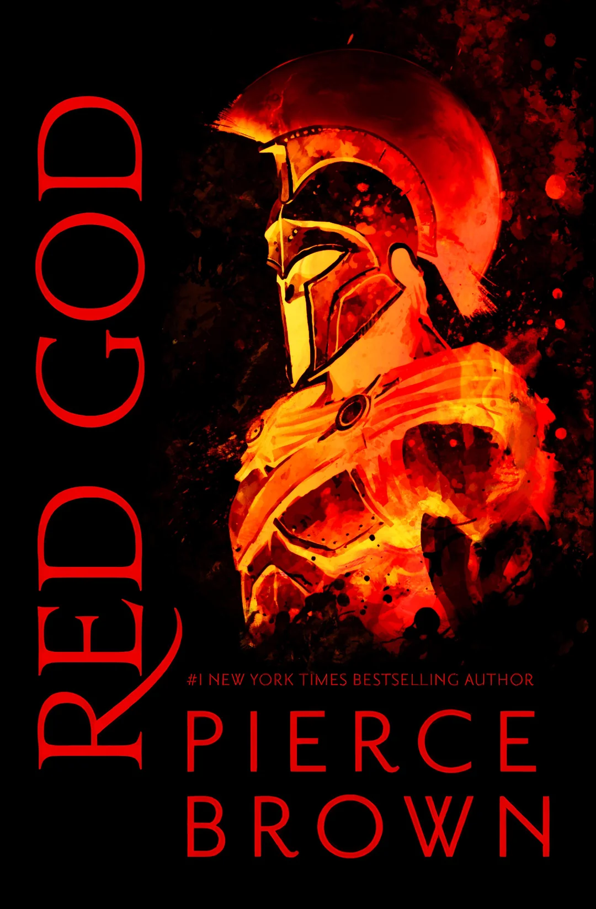
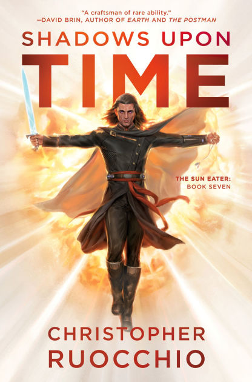
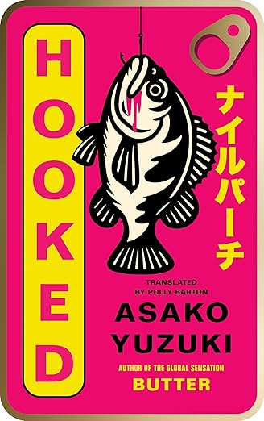
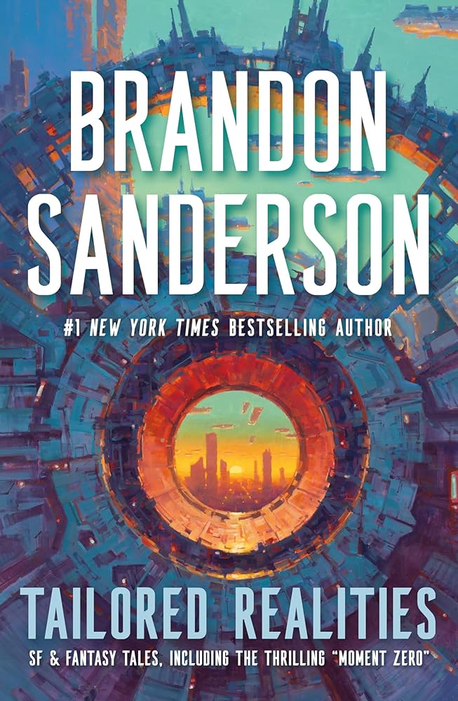

Red God
The Red Rising series has taken the world by storm, and for good reason. Red God marks the end of this epic saga, and it is sure to live up to the hype. This series is action packed and thrilling from beginning to end. In this series, man has taken over the solar system, however, society is divided into a color-based system. The Golds rule the stars, whereas the reds are left to do the dirty work, acting as slaves. In this story, Darrow, a red, undergoes a surgery to transform him into a Gold. He infiltrates their society in an attempt to burn it to the ground. In this penultimate final chapter, we will see what Darrow's conclusion will be, and the fate of the Solar System lies in the balance.
Shadows Upon Time
Hadrian Marlowe, a man seen as both a hero and as a murderer, tells of his story in the galaxy-spanning sci-fi epic. This book is also the conclusion to this epic series. This series spans hundreads of years, as we reach the end. Hadrian Marlowe, the man who killed a sun has a date with destiny. This series has a deeply philosophical tone which is sure to keep readers interested, so give it a read!
Hooked
From the author of Butter comes Hooked! A tale of obsession which will surely delight readers. Eriko seems to have the perfect life, however she is consumed by a deep loneliness. Enter Shoko, a blogger who is obsessed with Eriko's work. After a "chance meeting" the women seem to form a special connection. However, this connection has more than meets the eye!
Tailored Realities
From Brandon Sanderson, creator of the Mistborn series and the Stormlight archive comes a collection of short stories from both the fantasy and sci-fi genre. This collection inclused the novella "Moment Zero", "Snapshot", "Perfect State" and also "Defending Elysium. This collection also includes includes illustrations for each story. Knowing Sanderson, this will not disappoint."